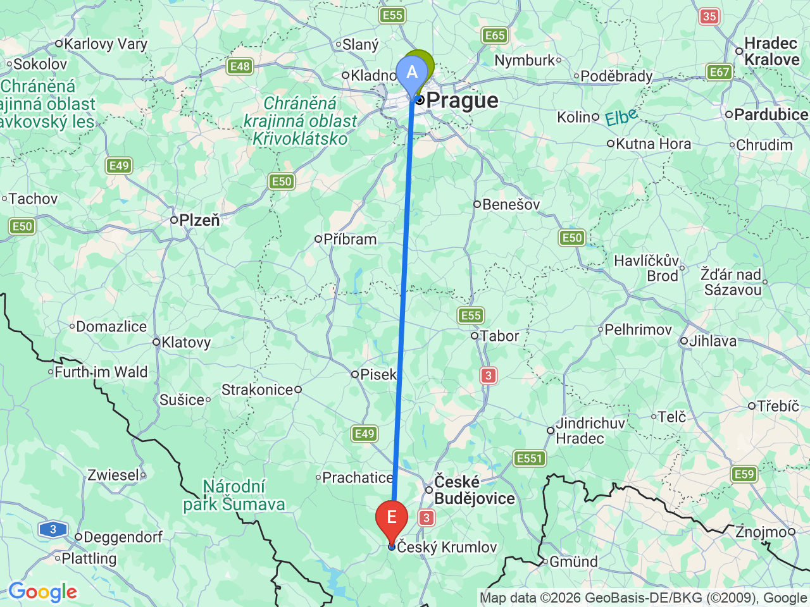
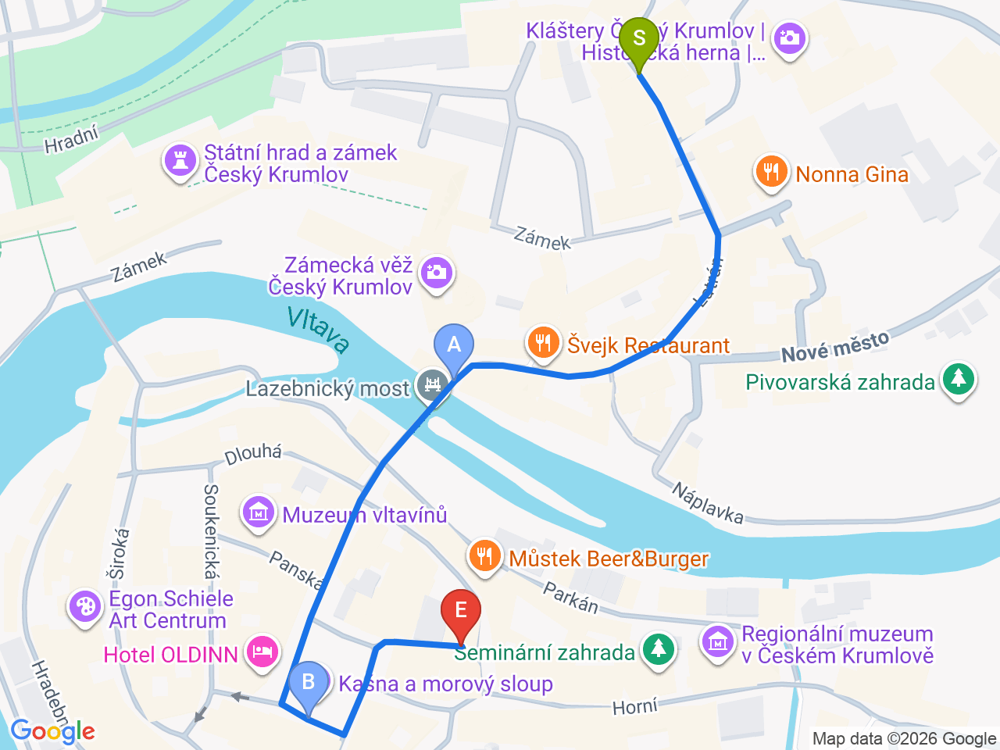

Day 27 · 2026-09-11（五）
捷克・布拉格/CK小鎮 Day 4/5
布拉格賦歸 → 前往 CK 小鎮
上午退房後搭 FlixBus 直達 Český Krumlov，下午沿拉特朗街散步、傍晚舊城廣場，晚上洞穴晚餐收尾
💱捷克幣匯率參考（查詢當日）：1 CZK ≈ 0.041 EUR（約 100 CZK ≈ 4.1 EUR）；1 CZK ≈ 1.52 TWD（約 100 CZK ≈ 152 TWD）。實際匯率會隨市場波動，僅供參考，換匯/刷卡以當下實際匯率為準
⏰晚餐 Krčma v Šatlavské ulici（洞穴風味烤肉餐廳）務必提前預約，即使非旺季也常常客滿；入口在 Šatlavská 街（地址 Horní 157）
飯店→巴士站→CK小鎮

CK小鎮初探（飯店→舊城廣場→晚餐）

固定時間行程DAY 27
| 時間 | 地點 | 地點 (英文) | 交通方式／班次 | 價格 | 預計停留(分鐘) | 備註 |
|---|---|---|---|---|---|---|
| 09:30 | 飯店退房，依所訂班次前往巴士站 | 地鐵約15-20分鐘 | 依所訂班次前往 Florenc（地鐵B/C線）或 Na Knížecí（地鐵B線 Anděl 站），出發前先確認實際發車站 | |||
| 10:00 | 搭 FlixBus 前往 Český Krumlov | 1Praha, Na Knížecí, Prague | 約2小時45分-3小時10分 | 10:00 Florenc發車或10:25 Na Knížecí發車，訂票時二擇一；FlixBus官網/app訂票並加購選座 | ||
| 13:10 | 抵達 Český Krumlov（Špičák），步行前往飯店 | 2Český Krumlov, Czech Republic | 步行約3-5分鐘（下坡） | Špičák站就在舊城北門口，步行即達，不用再搭接駁小巴進城 | ||
| 13:30 | Latran House 71 check-in、寄放行李 | 正式入住時間請以訂房確認信為準 | ||||
| 19:00 | 晚餐：Krčma v Šatlavské ulici | 步行約10分鐘 | 見上方三餐資訊 | 已提前預約 |
彈性探索景點DAY 27
| 地點 | 地點 (英文) | 預計停留(分鐘) | 價格 | 備註 |
|---|---|---|---|---|
| Latrán 老街漫步 | ALatrán, Český Krumlov, Czech Republic | 約20分鐘 | 免費 | 飯店所在的歷史老街，兩側矮房與小店，直通城堡入口，明天再往城堡方向深入 |
| 理髮師橋（Lazebnický most） | BLazebnický most, Český Krumlov, Czech Republic | 約15分鐘 | 免費 | 跨越伏爾塔瓦河，連接城堡側與舊城廣場，經典拍照點 |
| 廣場噴泉與瘟疫紀念柱 | CKašna a morový sloup, Náměstí Svornosti, Český Krumlov, Czech Republic | 約20分鐘 | 免費 | 舊城中心的巴洛克紀念柱與噴泉，傍晚燈光很有氣氛，可順道逛周邊紀念品店 |
每日三餐
早餐
飯店早餐Franz BY ZEITRAUM
退房前於飯店享用；備案：附近咖啡廳，或到 Na Knížecí 巴士站再買個三明治上車吃
午餐
Koloniál u zámkuKoloniál u zámku約 CZK 60-150／人
📍 Latrán 55, Český Krumlov, Czech Republic半雜貨店半咖啡館，抵達放完行李、往城堡方向的路上剛好順路，適合先簡單墊個胃
晚餐
Krčma v Šatlavské uliciKrčma v Šatlavské ulici約 CZK 300-500／人
📍 Horní 157（入口在 Šatlavská 街）, Český Krumlov, Czech Republic地下洞穴空間，中世紀風味烤肉餐廳，招牌是烤豬頸肉、綜合烤肉拼盤；務必提前預約（見上方提醒橫幅）
住宿資訊
Latran House 71 by KH
📍 Latrán 71, 381 01 Český Krumlov, Czech Republic連住2晚（9/11入住、9/13退房），就在城堡入口旁的拉特朗老街上；正式入住時間請以訂房確認信為準，提早抵達可先寄放行李